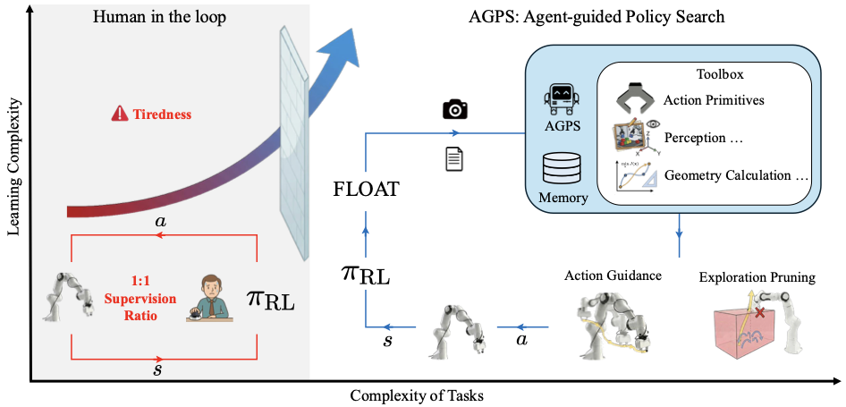

Reinforcement Learning (RL) offers a powerful paradigm for autonomous robots to master generalist manipulation skills through trial-and-error. However, its real-world application is stifled by low sample efficiency. Recent Human-in-the-Loop (HIL) methods accelerate training by using human corrections, yet this approach faces a scalability barrier. Reliance on human supervisors imposes a 1:1 supervision ratio that limits scalability, suffers from operator fatigue over extended sessions, and introduces high variance due to inconsistent human proficiency.
We present Agent-guided Policy Search (AGPS), a framework that automates the training pipeline by replacing human supervisors with a multimodal agent. Our key insight is that the agent can be viewed as a semantic world model, injecting intrinsic value priors to structure physical exploration. By using tools, the agent provides precise guidance via corrective waypoints and spatial constraints for exploration pruning. We validate our approach on three tasks, ranging from precision insertion to deformable object manipulation. Results demonstrate that AGPS outperforms HIL methods in sample efficiency. This automates the supervision pipeline, unlocking the path to labor-free and scalable robot learning.
Pipeline

Overview. Left: HIL methods encounter a scalability barrier as task complexity rises, restricted by the 1:1 supervision ratio and operator fatigue. Right: AGPS transcends this barrier by automating supervision. The system employs FLOAT as an asynchronous trigger to monitor policy performance. When a deviation is detected, the agent recalls memory and leverages a toolbox (Action Primitives, Perception, Geometry) for spatial reasoning with an RGBD image and task description. These interventions manifest as Action Guidance for trajectory correction and Exploration Pruning for spatial constraining.
Experiments
Click on each experiment to view videos. Videos load only when you expand the section.